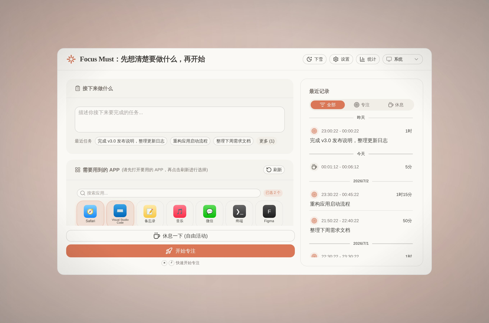

Focus Must 帮你养成「先计划、后执行」的工作习惯：写下任务、选好要用的应用，其余的一切干扰，交给它来挡。
免费 · 开源 (MIT) · 数据完全存储在本地

真实界面截图，随你的语言与深浅色自动切换。
写下任务、勾选要用的应用，⌘ + ↵ 一键开始专注。
不是又一个番茄钟。Focus Must 从源头管理注意力：没写清楚要做什么之前，不开始；不在清单里的应用，打不开。
开始前必须写下任务描述——一个小小的仪式，让每段专注都有明确的目标。最近任务一键复用。
只有你选中的应用可以使用。切到别的应用会被自动收起并温和提醒；真有急事，可以临时通融 2 分钟。
副屏自动显示专注遮罩与轮播语录，不给分心内容留任何一块屏幕。
专注到设定时长，响声提醒你起来活动；休息支持 5–45 分钟或自定义，结束自动回到计划页。
近 30 天专注趋势、时段分布与累计时长，看见自己的注意力去了哪里。
没有账号、没有云端、没有遥测。所有记录存在你自己的 ~/.focusmust 里，图标与字体也不产生任何网络请求。
从打开应用到进入专注，只需要十几秒。
用一句话描述接下来要完成的事。写不清楚，说明还没想清楚。
从运行中的应用里挑出这项任务真正需要的，支持搜索与默认白名单。
⌘ + ↵ 一键开始。计时器在菜单栏安静陪伴，分心应用被自动挡下。
v3.0 带来了一套全新的暖色设计语言：陶土色点缀在象牙白与暖炭色之间，标题使用衬线字体，专注界面只保留最必要的信息。
Focus Must 基于 MIT 许可证开源，可自由用于商业与非商业用途。用 Tauri 2 + Vue 3 + Rust 构建，安装包不到 10MB。